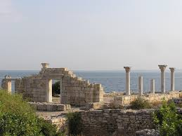
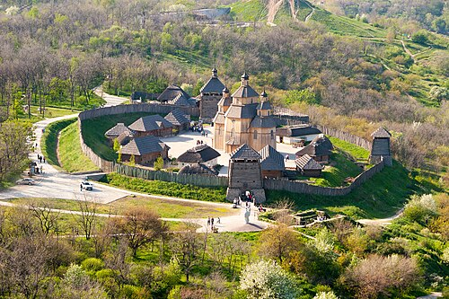
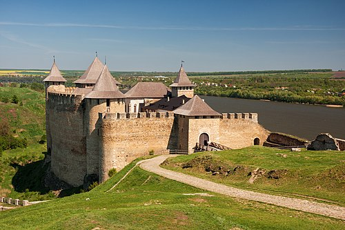

Додаткова експозиція ще 3 чудеса

Херсонес Таврійський (заповідник)
ТХерсонеський історико-археологічний музей-заповідник у Севастополі — музей, відкритий 1892 на базі археологічних знахідок з розкопів старогрецького міста Херсонесу, розташований у колишньому монастирі на території розкопів; спершу мав назву «склад місцевих старожитностей». Тут 20 років працював дослідник і археолог Карл Казимирович Косцюшко-Валюжинич (1847—1907), перший директор музейного закладу в добу царату. З 1980 року існує під сучасною назвою.

Хортиця
Хо́ртиця — найбільший острів на Дніпрі, розташований поблизу Запоріжжя, нижче Дніпровської ГЕС. Унікальний природний та історичний комплекс. Хортиця є одним із Семи чудес України.

Хотинська фортеця
Хоти́нська фортеця — середньовічна укріплена фортифікаційна споруда в Хотині (Чернівецька область, Україна), збудована русо-влахами за господарювання Мушатів у Молдавському князівстві на межі XIII—XVIII століть на місці руського городища (Х—ХІІІ).